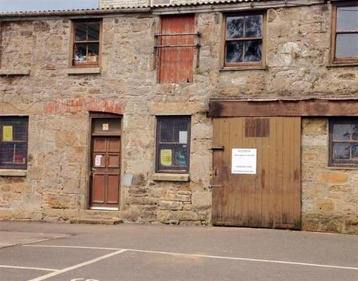
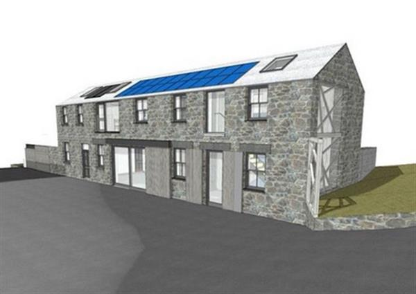

The Morrab Botanical Gardens are a sub tropical garden in the heart of Penzance and home to the rare and remarkable Morrab Library. Nestled in the grounds sits a partially-derelict, former stables building...
The Hypatia Trust is working together with The Friends of Morrab Gardens and the Pengarth Day Centreto revitalise the old stables that will become The Gardeners' House - a new learning centre for botanical and horticultural projects, a natural history reading room, lecture hall, open-air laboratory for ‘citizen science’ and communal activity spaces.
In 2016 the Hypatia Trust donated £15,000 to get a team together to do the initial feasibility study. This seedcorn money was part of a bequest to the Trust from a supporter in the USA.
In November 2017 the team obtained a Heritage Lottery Fund grant of £70,000 to complete the planning and development stages. We are now trying to raise £100,000 to add to the fund, demonstrating that supporters locally and internationally are backing the project. If all this can be done successfully, it will hopefully unlock a further £800,000 grant from the Heritage Lottery Fund to carry out the extensive building work. With further fundraising and additional grants the total budget of about £1.2 million will be achieved.
The Gardeners' House will provide educational and training opportunities and house the Hypatia Natural History collection – a special collection and women’s archive – books, papers and ephemera showing the engagement of women in recording the botanical, horticultural, photographic and artistic nature of the Cornish landscape. It will also create a warm and welcoming space for clients of the Pengarth Day Centre, a home for The Friends of Morrab Gardens and benefit the whole town of Penzance and Cornish communities as well as its wider botanical and horticultural national and international visitors.
This is a really big project for a small town like Penzance, and will provide benefits for years to come.
'Click here to see Architects Drawings'
We’ve leapt over the first hurdle and now we need your help. For phase two of this community project we need to raise £100,000
Please support Gardeners' House by donating as much as you can!
Gardeners' House.....New Beginnings

The derelict stables as they are now (pictured above) and an Architects impression.
